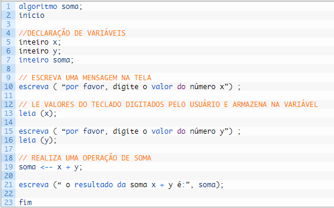

➤ Um modelo de dados é uma representação estruturada dos elementos de dados relevantes para um sistema
ou aplicação específica. Ele define como os dados são organizados, armazenados e manipulados dentro de um sistema.
Dentre os elementos do modelo de dados, os três principais são a memória, as variáveis e as constantes.
➤ Memória: A memória refere-se ao espaço de armazenamento utilizado pelo sistema para armazenar dados temporariamente durante a execução de um programa.
A memória pode ser dividida em diferentes áreas, como a memória principal (RAM) e a memória secundária (disco rígido). A memória é utilizada
para armazenar variáveis e constantes, bem como outras estruturas de dados necessárias para a execução do programa.
➤ Variáveis: Uma variável é um local de armazenamento nomeado que contém um valor específico. Ela pode ser usada para armazenar diferentes tipos de dados,
como números, texto, datas, entre outros. As variáveis têm um nome único e podem ter seu valor alterado durante a execução do programa.
Elas são usadas para armazenar informações temporárias ou dados que precisam ser modificados ou atualizados ao longo do tempo.
➤ Constantes: Uma constante é um valor fixo que não pode ser alterado durante a execução do programa. Ela é definida no código-fonte e possui um nome significativo
para representar seu valor. As constantes são úteis quando se deseja usar um valor específico várias vezes no programa e garantir que ele não seja
modificado acidentalmente. Por exemplo, uma constante pode ser usada para armazenar o valor de Pi (3.14159) em um programa de cálculos matemáticos.
➤ Tanto as variáveis quanto as constantes desempenham papéis importantes na manipulação e processamento de dados dentro de um sistema. Elas ajudam
a armazenar e acessar informações de maneira eficiente, permitindo que os programas realizem cálculos, tomem decisões e executem tarefas com base
nos valores armazenados.
◉ Variáveis
➤ Basicamente, uma variável é um tipo de dado armazenado em computador. Chama-se variável pois o valor contido nesse espaço de memória do computador
varia com o tempo, não é um valor fixo. Como bem sabemos, nosso computador utiliza memória RAM para armazenar dados temporários e essa memória é
utilizada também pelos nossos programas. Quando declaramos uma variável em um programa, estamos na verdade definindo e reservando um espaço na memória para armazenar o valor que aquela variável
conterá em determinado tempo de execução do programa.
➤ Muito difícil? Vamos exemplificar então pra facilitar. Suponha que você precise fazer um programa que solicite ao usuário dois números inteiros,
some esses dois números e apresente o resultado da soma para o usuário.
➤ Para resolver esse problema teremos de DECLARAR duas variáveis do TIPO inteiras. Vamos supor que essas duas variáveis se chamem X e Y. Além disso,
você precisará de uma terceira variável para armazenar o resultado da soma. Vamos chamar então essa variável de SOMA. Sendo assim, teremos o seguinte
algoritmo passo a passo:

➤ Não se preocupe com alguns detalhes desse algoritmo, voltaremos nele mais pra frente. O que é importante no momento é entender como funcionam
as variáveis. Veja, o programa solicita ao usuário para digitar os valores de X e Y.
➤ Nesse instante é impresso na tela a mensagem que está dentro do parênteses do comando ESCREVA e, em seguida, o usuário digita um valor usando o teclado.
No momento em que o usuário digita o valor desejado, esse valor DECIMAL é “passado” para a variável X, por meio do comando LEIA. Lembre-se, a variável
X é um espaço de memória reservado, com o tamanho de bits para o tipo de dado INTEIRO. O mesmo acontece com a variável Y.
➤ Esses valores ficarão armazenados nas variáveis enquanto nenhum outro valor for digitado para eles, ou enquanto o programa estiver em execução.
Isso significa que depois que o programa terminar de executar, esses valores deixarão de existir, assim como as variáveis, e o espaço de memória
que estava reservado será também liberado.
➤ Então, quando alguém digita algo no teclado, isso pode ser obtido por um comando da linguagem de programação, armazenado em uma variável específica,
e depois manipulado no resto do programa. A cada vez que você executar esse programa, essas variáveis terão valores diferentes, por isso são variáveis,
são valores que mudam com o tempo.
◉ Constantes
➤ Uma constante é uma variável!! Sim, é uma variável no sentido de que uma constante também reserva um espaço de memória para o tipo de dado que manipulará.
Entretanto, uma constante armazenará um valor ÚNICO, um valor que NÃO mudará com o tempo de execução do programa.
➤ Suponha que você precise trabalhar com o número PI, que é um valor fixo de aproximadamente 3.14. Você pode simplesmente declará-lo e utilizá-lo
em todo o seu programa. Veja:

➤ Uma constante chamada PI foi declarada no início do algoritmo e, posteriormente, usada para realizar uma operação
de multiplicação. Portanto, lembre-se: constantes e variáveis são espaços de memória reservados para o tipo
de dados que você deseja trabalhar. Constantes são valores fixos que você utilizará em seu programa e variáveis
são valores que precisam variar durante o tempo de execução do seu programa.